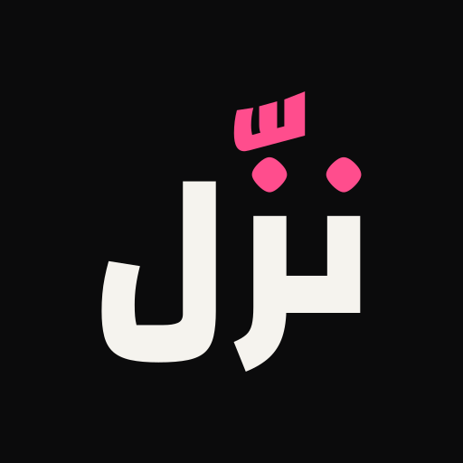
11The word
نزّل in the app's own Arabic type, dots and shadda in colour.
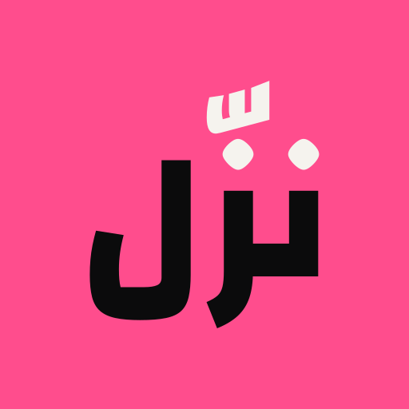
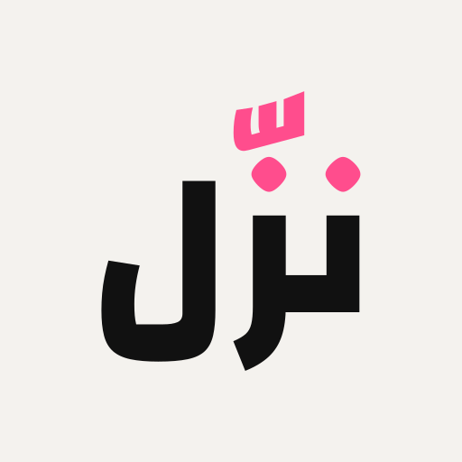
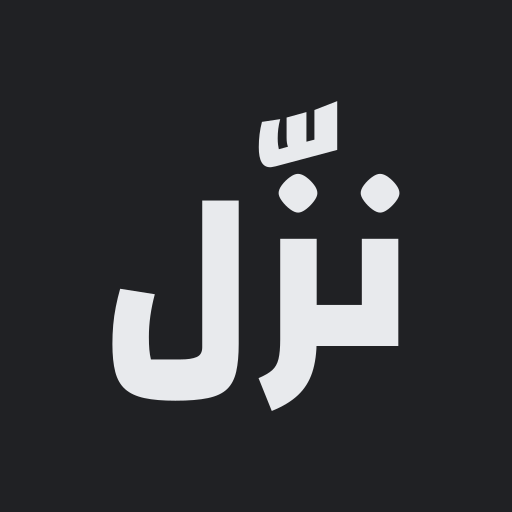
The whole name as the logo, in five kinds of lettering.

نزّل in the app's own Arabic type, dots and shadda in colour.




نزّل in the heavy lettering of old film posters.
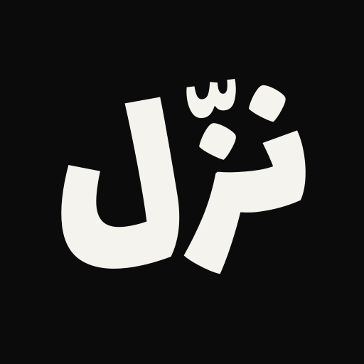
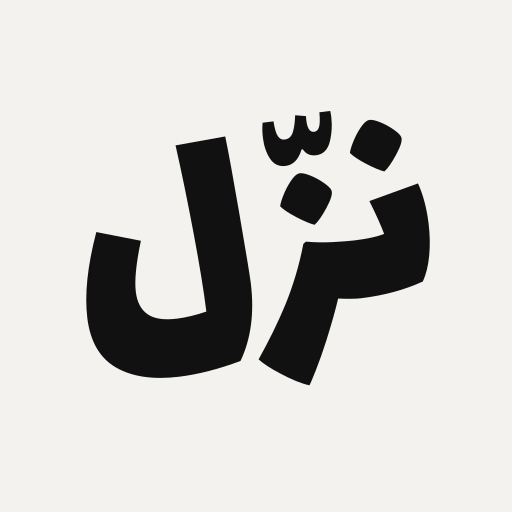
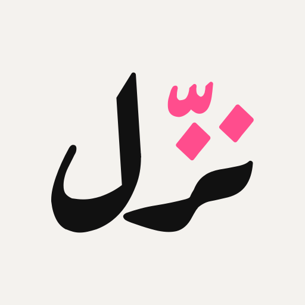
نزّل in Ruqaa, the everyday handwriting of the region.
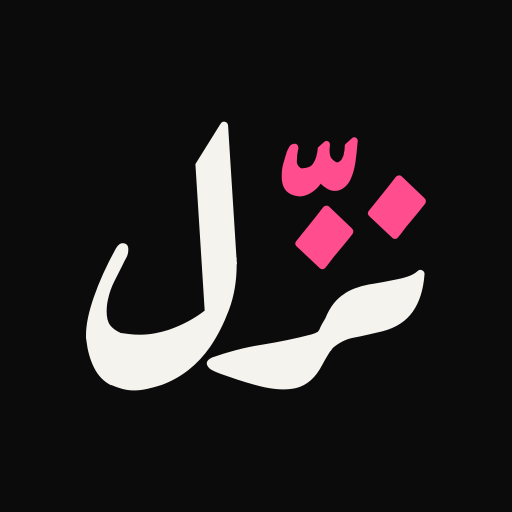
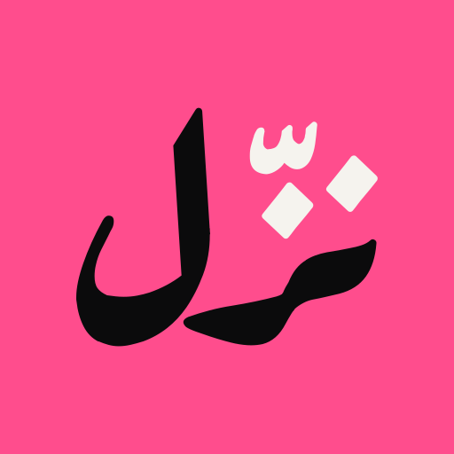
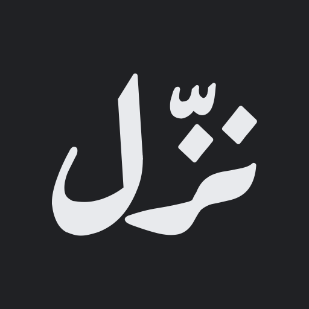

نزل in square Kufic, on the tiles of the library wall. Kufic leaves out the shadda.
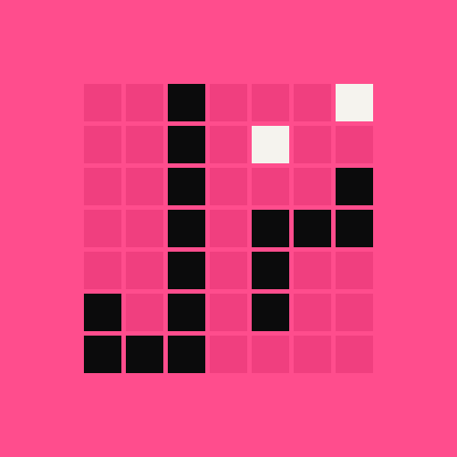
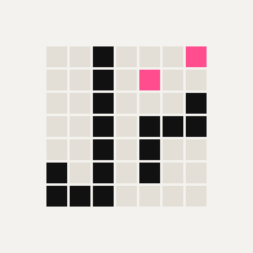
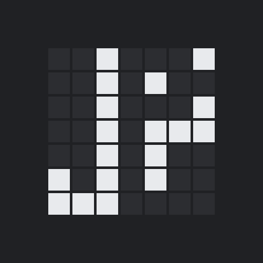
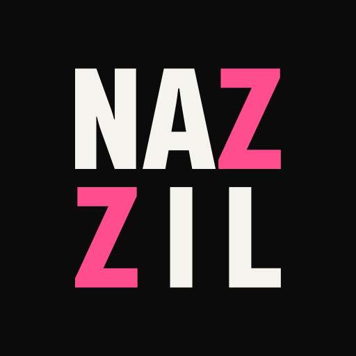
NAZZIL as a film title. The double Z is the shadda, so it gets the colour.
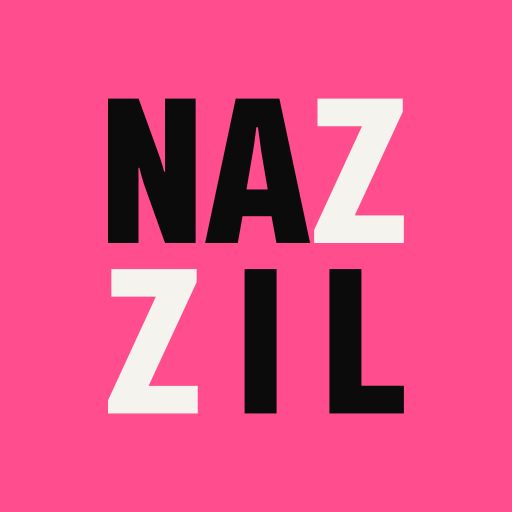
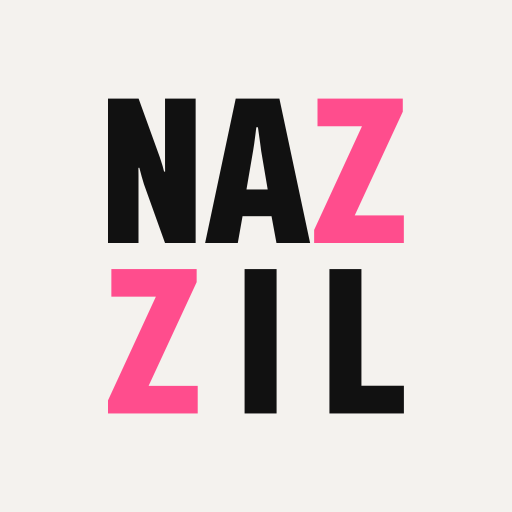